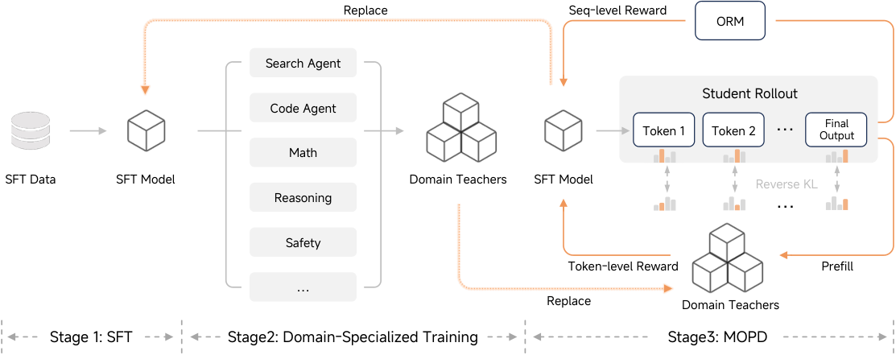

MiMo-V2-Flash Technical Report

问题与动机
从 MiMo-7B 到 V2-Flash，核心转变是：从"证明小模型可以有强推理"转向"构建高效可扩展的 agent 基座"。
核心问题：
- 如何在 15B active 参数限制下达到 30B+ Dense 模型的能力？
- 如何高效合并多个域的 RL teacher 能力到一个 student？
- 如何让 MTP 同时用于训练加速和推理加速？
方法核心思路
1. MoE 架构
| 配置 | 值 |
|---|---|
| 总参数量 | 309B |
| 激活参数 | 15B |
| 总层数 | 48（39 SWA + 9 GA） |
| MoE Experts | 256 总 / 8 激活 |
| Hidden Dimension | 4096 |
| Head Dimensions (Q/K/V) | 192 / 128 / 128 |
第一层用 Global Attention + Dense FFN（不用 MoE）用于训练稳定性。
2. Hybrid Sliding Window Attention
设计：5 个 SWA block + 1 个 GA block 交替，5:1 ratio。
| 参数 | SWA | GA |
|---|---|---|
| Window | 128 tokens | Full |
| Query Heads | 64 | 64 |
| KV Heads | 8 | 4 |
| FFN | MoE | Dense |
Learnable Attention Sink Bias：softmax 分母上每 head 可学习的偏置，允许模型在需要时给某些 token 分配接近零的注意力，大幅提升 hybrid SWA 效果。
KV-cache 节省：~7× reduction at 128K context。
3. MTP（Multi-Token Prediction）
轻量设计：Dense FFN（不用 MoE）+ SWA（不用 GA），最小化推理开销。
训练：
- 预训练：单个 MTP head
- 后训练：K 步预测的 K 个 replicated heads
Speculative Decoding 效果：
- 3 MTP layers
- 低熵 context（WebDev）：acceptance length 最高 3.6
- 2.6× decoding speedup
- acceptance length 与 next-token cross-entropy 强负相关（R²=0.995）
4. MOPD（Multi-Teacher On-Policy Distillation）
这一步不是离线模仿固定 teacher response，而是让 student 在当前策略上采样，再由多位教师补充不同能力的修正信号；因此它更像“在策略能力集成”，目标是降低多域后训练互相覆盖的问题。
三阶段流程：
- SFT：在 millions of diverse samples（thinking + non-thinking）上建立基础 instruction following
- Domain-Specialized RL：separate teachers 分别在以下领域独立 RL 优化：
- Agentic：
- Code Agent（90K real GitHub issues）、
- Terminal Agent（30K Stack Overflow）、
- Web Dev Agent、
- General Agent
- Non-agentic：
- Math reasoning、
- general reasoning、
- safety alignment
- MOPD：student 在自己的 on-policy rollout 上，同时接收所有 teachers 的 token-level guidance
关键公式：
$$A^{MOPD}_t = \text{sg}\left[\log \frac{\pi_{\text{domain}}(y_t|x, y_{<t})}{\pi_\theta(y_t|x, y_{<t})}\right] + \alpha \times A^{ORM}_t$$
- $A^{MOPD}_t$：student 的 MOPD 优势估计
- $A^{ORM}_t$：结果奖励模型（Outcome Reward Model）优势
- $\text{sg}[\cdot]$：stop gradient，reverse KL divergence 项只提供 guidance signal
- 双层过滤机制（引自 IcePop2025）：
- Training-inference IS：$w_t = \text{sg}[\pi_\theta/\mu_\theta]$ 在 $[\epsilon_{low}, \epsilon_{high}]$ 区间内保留，比值越界则 $w_t=0$ 直接 mask 掉该 token
- Reverse KL advantage：
sg[log π_teacher / π_student]只提供 guidance signal 不回传梯度 - 两者相乘，低质量 token 被彻底丢弃，高置信 teacher 方向给正向信号
- 结合 ORM 优势（可验证结果奖励）
MOPD 效果（表7）：
- AIME 2025：Student 89.3 → Teacher RL 93.9 → After MOPD 94.1（+0.2 above teacher）
- HMMT Feb. 2025：Student 76.9 → Teacher RL 82.6 → After MOPD 84.4（+1.8）
- LiveCodeBench：Student 77.5 → Teacher RL 82.6 → After MOPD 83.2（+0.6）
关键发现：MOPD student 能超越 RL teacher——说明 on-policy learning + multi-teacher 信号有额外增益。
5. 预训练
| 阶段 | Tokens | Context | 关键 |
|---|---|---|---|
| Stage 1 | 0-22T | 32K | 通用语料 |
| Stage 2 | 22-26T | 32K | 代码上采样 + 5% 合成推理数据 |
| Stage 3 | 26-27T | 256K | 上下文扩展，长依赖数据上采样 |
MTP loss weight：Stage 1 用 0.3，Stage 2/3 用 0.1。
实验结果
Base Model vs Kimi-K2 & DeepSeek-V3.2（表5）
| Benchmark | MiMo-V2-Flash | Kimi-K2 | DeepSeek-V3.1 | DeepSeek-V3.2 |
|---|---|---|---|---|
| MMLU-Pro | 73.2 | 69.2 | 58.8 | 62.1 |
| GPQA-Diamond | 55.1 | 48.1 | 51.0 | 52.0 |
| AIME 24&25 | 35.3 | 31.6 | 21.6 | 24.8 |
| MATH | 71.0 | 70.2 | 62.6 | 62.5 |
| SWE-Bench | 30.8 | 28.2 | 24.8 | 9.4 |
| GSM8K | 92.3 | 92.1 | 91.4 | 91.1 |
Long Context（表6）
| Length | NIAH-Multi | GSM-Infinite |
|---|---|---|
| 32K | 99.3% | — |
| 64K | 99.9% | 31.5 |
| 128K | 98.6% | 29.0 |
| 256K | 96.7% | — |
32K-256K 检索近乎完美。
Post-Training vs Kimi-K2 & DeepSeek-V3.2（表9）
| Benchmark | MiMo-V2-Flash | Kimi-K2 | DeepSeek-V3.2 |
|---|---|---|---|
| AIME 2025 | 94.1 | 94.5 | 93.1 |
| SWE-Bench Verified | 73.4 | 71.3 | 73.1 |
| SWE-Bench Multilingual | 71.7 | 61.1 | 70.2 |
| LongBench V2 | 60.6 | 48.1 | 58.4 |
| LiveCodeBench-v6 | 85.1 | 83.1 | 83.3 |
开源最强软件工程模型（73.4% SWE-Bench Verified，71.7% 多语言）。
对研究的启发
可转化的问题：
- GUI Agent 的不同能力域（element grounding、instruction following、error recovery）是否可以用 MOPD 分别训练 teacher 再合并？
- MTP speculative decoding 对 GUI RL rollout 吞吐的提升，能多大程度改变训练预算？
- Hybrid attention 的 attention sink bias 是否可以迁移到其他 sliding window attention 变体？
相关资料
- arXiv：https://arxiv.org/abs/2601.02780
- GitHub：https://github.com/XiaomiMiMo/MiMo-V2-Flash
- 系列总览：MiMo-Series-From-7B-Reasoning-Model-to-Omnimodal-Agent-Foundation-Models
- V2-Pro：MiMo-V2-Pro